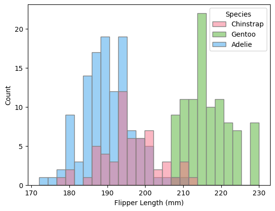
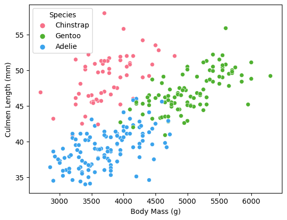

The Palmer Penguins dataset is a public dataset frequently used within the educational data science community. It contains Dr. Kristen Gorman and the Long Term Ecological Research Network’s observations of hundreds of antartic penguins belonging to 3 species groups: Adelie, Gentoo, and Chinstrap.
This blog aims to accomplish three goals:
Conduct exploration of the Palmer Penguins dataset
Methodically select 3 features and a model type that produces 100% penguin species classification accuracy on test data
Evaluate chosen model by analyzing decision regions and a confusion matrix
Random Exploration
import pandas as pdtrain_url ="https://raw.githubusercontent.com/PhilChodrow/ml-notes/main/data/palmer-penguins/train.csv"train = pd.read_csv(train_url)train["Species"] = train["Species"].str.split().str.get(0)train.head()
studyName
Sample Number
Species
Region
Island
Stage
Individual ID
Clutch Completion
Date Egg
Culmen Length (mm)
Culmen Depth (mm)
Flipper Length (mm)
Body Mass (g)
Sex
Delta 15 N (o/oo)
Delta 13 C (o/oo)
Comments
0
PAL0809
31
Chinstrap
Anvers
Dream
Adult, 1 Egg Stage
N63A1
Yes
11/24/08
40.9
16.6
187.0
3200.0
FEMALE
9.08458
-24.54903
NaN
1
PAL0809
41
Chinstrap
Anvers
Dream
Adult, 1 Egg Stage
N74A1
Yes
11/24/08
49.0
19.5
210.0
3950.0
MALE
9.53262
-24.66867
NaN
2
PAL0708
4
Gentoo
Anvers
Biscoe
Adult, 1 Egg Stage
N32A2
Yes
11/27/07
50.0
15.2
218.0
5700.0
MALE
8.25540
-25.40075
NaN
3
PAL0708
15
Gentoo
Anvers
Biscoe
Adult, 1 Egg Stage
N38A1
Yes
12/3/07
45.8
14.6
210.0
4200.0
FEMALE
7.79958
-25.62618
NaN
4
PAL0809
34
Chinstrap
Anvers
Dream
Adult, 1 Egg Stage
N65A2
Yes
11/24/08
51.0
18.8
203.0
4100.0
MALE
9.23196
-24.17282
NaN
The training data contains 18 observations about 275 penguin subjects. Let’s clean this data by dropping irrelevent columns and one-hot encoding the qualitative observations.
import seaborn as snssns.set_palette("husl", 3)# visualization 1: flipper length frequency by speciessns.histplot(data = train, x ="Flipper Length (mm)", hue ="Species", bins =25, edgecolor ='grey')
/Users/lizrightmire/anaconda3/envs/ml-0451/lib/python3.9/site-packages/seaborn/_oldcore.py:1119: FutureWarning: use_inf_as_na option is deprecated and will be removed in a future version. Convert inf values to NaN before operating instead.
with pd.option_context('mode.use_inf_as_na', True):

This histogram shows the distribution of the penguins’ flipper lengths. The bars are colored based on penguin species, so the shape of the distributions allow the viewer to infer the mean, medians, and modes for each species. There is a trend in flipper length based on species: Gentoo penguins tend to have the largest flippers, and Adelie and Chinstrap penguins have smaller ones. This indicates that flipper length may be a helpful feature to use in classification, as it effectively identifies the Gentoo penguins from the rest of the species.
# visualization 2: body mass vs. culmen lengthplot1 = sns.scatterplot(train, x ="Body Mass (g)", y ="Culmen Length (mm)", hue ="Species")

After considering multiple combinations of qualitative features in scatterplots, body mass and culmen length proved to show clear groupings of penguin species. Therefore, these two features are likely to be effective in a classification model. That being said, overlap does exist, especially between Adelie and Gentoo penguins.
Species Island
Adelie Biscoe 33
Dream 45
Torgersen 42
Chinstrap Dream 57
Gentoo Biscoe 98
dtype: int64
This summary table shows the numbers of penguins present on each island. Every penguin on Torgersen island is an Adelie penguin, and both Gentoo and Chinstrap penguins can only be found on one island. These clear trends cause me to consider island location as a potential feature in a classification model.
Because there were only 5 qualitative and 6 quantitative feature in the cleaned dataset, I chose to perform an exhaustive search to determine the most effective features and model for species classification. For each combination of 2 quantitative and 1 qualitative feature, I fit 4 models: Logistic Regression, Decision Tree, Random Forest, and SVM. Cross validation was performed to guard against overfitting as follows:
Logistic Regression: recorded average accuracy of 5 rounds, each round with a random 20% of data used for testing
Decision Tree and Random Forest: performed grid search of varrying max_depth values, recorded highest accuracy achieved
SVM: performed grid search of varrying gamma values, recorded highest accuracy achieved
[Island_Biscoe, Island_Dream, Island_Torgersen, Culmen Length (mm), Delta 15 N (o/oo)]
Random Forest
0.976621
For each model, the features, model type, and highest possible score was added to a dataframe. Sorting this dataframe by score revealed that Logistic Regression with Sex, Culmen Length and Culmen Depth as features produced the best classification.
To truly evaluate our model, we must evaluate how it performs on unseen testing data.
# train with optimal features and modelLR = LogisticRegression()optimal_features = ['Culmen Length (mm)', 'Culmen Depth (mm)','Sex_FEMALE', 'Sex_MALE']LR.fit(X_train[optimal_features], y_train)
/Users/lizrightmire/anaconda3/envs/ml-0451/lib/python3.9/site-packages/sklearn/linear_model/_logistic.py:460: ConvergenceWarning: lbfgs failed to converge (status=1):
STOP: TOTAL NO. of ITERATIONS REACHED LIMIT.
Increase the number of iterations (max_iter) or scale the data as shown in:
https://scikit-learn.org/stable/modules/preprocessing.html
Please also refer to the documentation for alternative solver options:
https://scikit-learn.org/stable/modules/linear_model.html#logistic-regression
n_iter_i = _check_optimize_result(
LogisticRegression()
In a Jupyter environment, please rerun this cell to show the HTML representation or trust the notebook. On GitHub, the HTML representation is unable to render, please try loading this page with nbviewer.org.
A score of 1.0 indicates that 100% of the penguins in the testing dataset were correctly classified by our model. Yippie!
Stepping back a little, let’s consider: does this make sense? Should we be able to determine a penguin species based on its sex, culmen length, and culmen depth?
Yes, it seems logical that different species of penguins have different culmen dimensions. I am also not surprised that sex is an important qualitative feature to consider, as penguin size, and consequently beak dimensions, vary based on sex. For example, female Gentoo penguins may have similar culmen lengths to a male Adelie, so sex is required to determine species.
To be sure, let’s create a scatterplot of these 3 features and look at the decision regions produced by our logistic algorithm.
from matplotlib.patches import Patchfrom matplotlib import pyplot as pltdef plot_regions(model, X, y): x0 = X[X.columns[0]] x1 = X[X.columns[1]] qual_features = X.columns[2:] fig, axarr = plt.subplots(1, len(qual_features), figsize = (7, 3))# create a grid grid_x = np.linspace(x0.min(),x0.max(),501) grid_y = np.linspace(x1.min(),x1.max(),501) xx, yy = np.meshgrid(grid_x, grid_y) XX = xx.ravel() YY = yy.ravel()for i inrange(len(qual_features)): XY = pd.DataFrame({ X.columns[0] : XX, X.columns[1] : YY })for j in qual_features: XY[j] =0 XY[qual_features[i]] =1 p = model.predict(XY) p = p.reshape(xx.shape)# use contour plot to visualize the predictions axarr[i].contourf(xx, yy, p, cmap ="jet", alpha =0.2, vmin =0, vmax =2) ix = X[qual_features[i]] ==1# plot the data axarr[i].scatter(x0[ix], x1[ix], c = y[ix], cmap ="jet", vmin =0, vmax =2) axarr[i].set(xlabel = X.columns[0], ylabel = X.columns[1], title = qual_features[i]) patches = []for color, spec inzip(["red", "green", "blue"], ["Adelie", "Chinstrap", "Gentoo"]): patches.append(Patch(color = color, label = spec)) plt.legend(title ="Species", handles = patches, loc ="best") plt.tight_layout()
For the training data:
# training dataplot_regions(LR, X_train[optimal_features], y_train)
Yes, separating penguins by sex creates very clear clusters of points by species in the testing data, which transfers perfectly to the points in the testing data.
Another way to evaluate would be to look at a confusion matrix for this model
from sklearn.metrics import confusion_matrix#actual#predictedy_test_pred = LR.predict(X_test[optimal_features]) # guesses for each datacm = confusion_matrix(y_test, y_test_pred)for i inrange(3):for j inrange(3):print(f"There were {cm[i,j]}{le.classes_[i]} penguin(s) who were classified as {le.classes_[j]}.")
There were 31 Adelie penguin(s) who were classified as Adelie.
There were 0 Adelie penguin(s) who were classified as Chinstrap.
There were 0 Adelie penguin(s) who were classified as Gentoo.
There were 0 Chinstrap penguin(s) who were classified as Adelie.
There were 11 Chinstrap penguin(s) who were classified as Chinstrap.
There were 0 Chinstrap penguin(s) who were classified as Gentoo.
There were 0 Gentoo penguin(s) who were classified as Adelie.
There were 0 Gentoo penguin(s) who were classified as Chinstrap.
There were 26 Gentoo penguin(s) who were classified as Gentoo.
Zero penguins were mis-classified. This makes sense because we got our logistic regression model had an accuracy of 1.0!
The plot below is another way to visualize the confusion matrix. For an accuracy of 1.0, we would expect zeros in every box execept for those on the diagonal, meaning that zero penguins were misclassified.